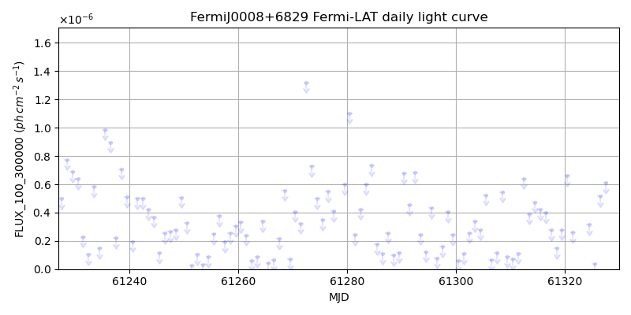
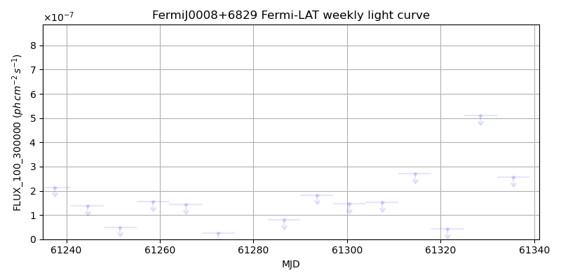
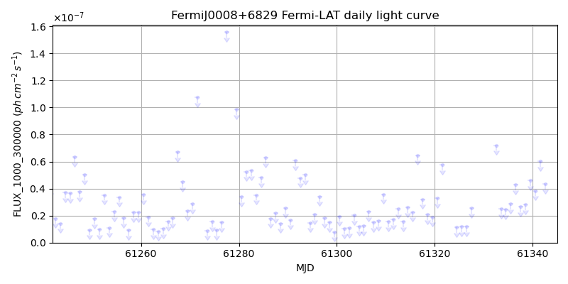
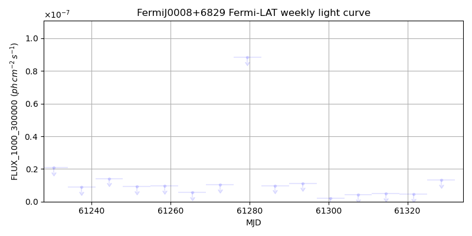

LAT Lightcurve site: https://fermi.gsfc.nasa.gov/ssc/data/access/lat/msl_lc/source/Fermi_J0008p6829
NED: Query
Time of last update of this page: UT: 2026-10-24 15:10 (MJD: 61337.632)
| Property | Value |
|---|---|
| R.A. | 0:08:20.64 |
| Dec. | 68:34:44.4 |
| z | 0.000 |
| 3FGL SpectrumType | |
| 3FGL PL Index | -1.00 |
| 3FGL Flux_100_300000 | -1.00e+00 |
| 3FGL Flux_1000_300000 | -1.00e+00 |
| 3FGL Flux >200 GeV | -1.00e+00 |
| 3FGL Extrap. Crab >200 GeV | -1.00 |
| 3FGL Flux After EBL Absorption >200GeV | -1.00e+00 |
| 3FGL EBL Crab Fraction >200GeV | -1.00 |

| MJD | dMJD | Flux | dFlux | Frac3FGL | FracCrab>200GeV | EBLFracCrab>200GeV |
|---|---|---|---|---|---|---|
| 61332.50 | 0.50 | 1.09e-06 | 0.00e+00 | 0.00 | 0.00 | -0.00 |
| 61333.50 | 0.50 | 2.08e-07 | 0.00e+00 | 0.00 | 0.00 | -0.00 |
| 61334.50 | 0.50 | 1.24e-07 | 0.00e+00 | 0.00 | 0.00 | -0.00 |
| 61335.50 | 0.50 | 3.78e-07 | 0.00e+00 | 0.00 | 0.00 | -0.00 |
| 61336.50 | 0.50 | 5.38e-07 | 0.00e+00 | 0.00 | 0.00 | -0.00 |

| MJD | dMJD | Flux | dFlux | Frac3FGL | FracCrab>200GeV | EBLFracCrab>200GeV |
|---|---|---|---|---|---|---|
| 61300.50 | 3.50 | 1.47e-07 | 0.00e+00 | 0.00 | 0.00 | -0.00 |
| 61307.50 | 3.50 | 1.52e-07 | 0.00e+00 | 0.00 | 0.00 | -0.00 |
| 61314.50 | 3.50 | 2.71e-07 | 0.00e+00 | 0.00 | 0.00 | -0.00 |
| 61321.50 | 3.50 | 4.21e-08 | 0.00e+00 | 0.00 | 0.00 | -0.00 |
| 61328.50 | 3.50 | 5.09e-07 | 0.00e+00 | 0.00 | 0.00 | -0.00 |

| MJD | dMJD | Flux | dFlux | Frac3FGL | FracCrab>200GeV | EBLFracCrab>200GeV |
|---|---|---|---|---|---|---|
| 61332.50 | 0.50 | 7.21e-08 | 0.00e+00 | 0.00 | 0.00 | -0.00 |
| 61333.50 | 0.50 | 2.49e-08 | 0.00e+00 | 0.00 | 0.00 | -0.00 |
| 61334.50 | 0.50 | 2.43e-08 | 0.00e+00 | 0.00 | 0.00 | -0.00 |
| 61335.50 | 0.50 | 2.87e-08 | 0.00e+00 | 0.00 | 0.00 | -0.00 |
| 61336.50 | 0.50 | 4.29e-08 | 0.00e+00 | 0.00 | 0.00 | -0.00 |

| MJD | dMJD | Flux | dFlux | Frac3FGL | FracCrab>200GeV | EBLFracCrab>200GeV |
|---|---|---|---|---|---|---|
| 61300.50 | 3.50 | 2.02e-09 | 0.00e+00 | 0.00 | 0.00 | -0.00 |
| 61307.50 | 3.50 | 4.19e-09 | 0.00e+00 | 0.00 | 0.00 | -0.00 |
| 61314.50 | 3.50 | 4.84e-09 | 0.00e+00 | 0.00 | 0.00 | -0.00 |
| 61321.50 | 3.50 | 4.56e-09 | 0.00e+00 | 0.00 | 0.00 | -0.00 |
| 61328.50 | 3.50 | 1.31e-08 | 0.00e+00 | 0.00 | 0.00 | -0.00 |
--------------------------------------------------------- Using user-supplied coords: 0:08:20.64 68:34:44.4 2000 --------------------------------------------------------- FLWO UT night of: 2026-10-25 Local Sid. @ Midnight: 01:50 Sunset (-15.0) (local, UT): 18:49 01:49 Sunrise (-15.0) (local, UT): 05:27 12:27 Moonrise (local, UT): Moonset (local, UT): Moon phase: 0.99 --------------------------------------------------------- AzTime LSID UT Obj_el Obj_az Mn_el Mn_az Sep. --------------------------------------------------------- 18:49 20:39 01:49 42.6 23.0 26.2 94.5 59.5 19:19 21:09 02:19 45.0 21.3 32.4 98.6 59.3 19:49 21:39 02:49 47.2 19.0 38.6 103.2 59.2 20:19 22:09 03:19 49.2 16.1 44.7 108.4 59.1 20:49 22:39 03:49 50.8 12.7 50.6 114.6 59.0 21:19 23:09 04:19 52.0 8.8 56.2 122.3 58.9 21:49 23:39 04:49 52.7 4.5 61.2 132.2 58.7 22:19 00:09 05:19 53.0 360.0 65.5 145.3 58.6 22:49 00:39 05:49 52.7 355.5 68.4 162.2 58.5 23:19 01:10 06:19 52.0 351.2 69.4 182.2 58.4 23:49 01:40 06:49 50.8 347.3 68.2 202.0 58.3 00:19 02:10 07:19 49.2 343.9 65.1 218.6 58.2 00:49 02:40 07:49 47.2 341.0 60.8 231.3 58.1 01:19 03:10 08:19 45.0 338.7 55.7 240.9 58.0 01:49 03:40 08:49 42.6 336.9 50.1 248.5 57.9 02:19 04:10 09:19 40.0 335.7 44.3 254.6 57.8 02:49 04:40 09:49 37.4 335.0 38.2 259.8 57.7 03:19 05:10 10:19 34.6 334.8 32.1 264.4 57.6 03:49 05:40 10:49 31.9 334.9 26.0 268.5 57.5 04:19 06:10 11:19 29.2 335.4 19.9 272.4 57.5 04:49 06:40 11:49 26.6 336.3 13.8 276.2 57.4 05:19 07:11 12:19 24.1 337.5 7.8 279.9 57.3 05:27 07:18 12:27 23.5 337.8 6.2 280.9 57.3 --------------------------------------------------------- Source never above horizon of 55.0 deg. Dark hours >55 deg.: 0.00